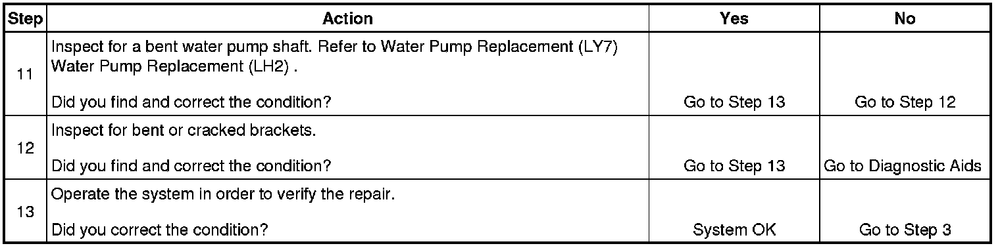

Drive Belt Rumbling and Vibration Diagnosis
Drive Belt Rumbling and Vibration Diagnosis
Diagnostic Aids
The accessory drive components can have an affect on engine vibration. Vibration from the engine operating may cause a body component or another part of the vehicle to make rumbling noise. Vibration can be caused by, but not limited to the A/C system over charged, the power steering system restricted or the incorrect fluid, or an extra load on the generator. To help identify an intermittent or an improper condition, vary the loads on the accessory drive components.
The drive belt may have a rumbling condition that can not be seen or felt. Sometimes replacing the drive belt may be the only repair for the symptom.
If replacing the drive belt, completing the diagnostic table, and the noise is only heard when the drive belts are installed, there might be an accessory drive component with a failure. Varying the load on the different accessory drive components may aid in identifying which component is causing the rumbling noise.
Test Description
The numbers below refer to the step numbers on the diagnostic table.
2. This test is to verify that the symptom is present during diagnosing. Other vehicle components may cause a similar symptom.
3. This test is to verify that one of the drive belts is causing the rumbling noise or vibration. Rumbling noise may be confused with an internal engine noise due to the similarity in the description. Remove only one drive belt at a time if the vehicle has multiple drive belts. When removing the drive belts the water pump may not be operating and the engine may overheat. Also DTCs may set when the engine is operating with the drive belts removed.
4. Inspecting the drive belts is to ensure that they are not causing the noise. Small cracks across the ribs of the drive belt will not cause the noise. Belt separation is identified by the plys of the belt separating and may be seen at the edge of the belt our felt as a lump in the belt.
5. Small amounts of pilling is normal condition and acceptable. When the pilling is severe the drive belt does not have a smooth surface for proper operation.
9. Inspecting of the fasteners can eliminate the possibility that the wrong bolt, nut, spacer, or washer was installed.
11. This step should only be performed if the water pump is driven by the drive belt. Inspect the water pump shaft for being bent. Also inspect the water pump bearings for smooth operation and excessive play. Compare the water pump with a known good water pump.
12. Accessory drive component brackets that are bent, cracked, or loose may put extra strain on that accessory component causing it to vibrate.

